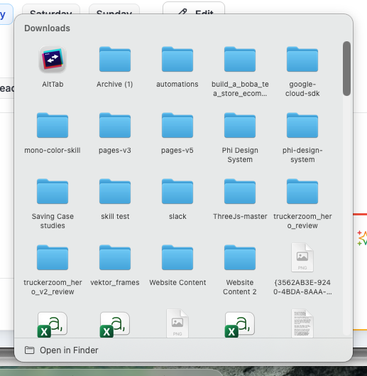

Superdock
SuperdockOne Dock icon
per browser profile.
Superdock is a Mac Dock replacement that gives every Chrome profile its own Dock icon. macOS folds all your profiles into one; Superdock separates them, and leaves the rest of your Mac exactly as it is.
See it before you switch.
Hover a profile and its windows float up, only its windows, nothing from your other identities in the way. You land where you meant to, first try.
Downloads, open where you clicked.
Click a folder in the dock and its contents open above it, as a grid or a list. Folders first, then files, newest downloads easy to spot. Click one to open it, or open the whole folder in Finder. Downloads is there from the first launch.

Every window, one click away.
Click the empty edge of the dock and everything you have open fans out at once. Find the one you want, and go.
Your apps, right where you left them.
Two screens, or three. Each app shows on the display its windows live on, so the dock always matches what is actually in front of you.
You can't tell it from Apple's.
Icon size, spacing and sharpness are measured against the real Dock, to the pixel.
One price. Yours to keep.
The dock is free, forever. Chrome profile icons are one purchase after a 14-day trial, no card. Licences open shortly; download now and the trial starts when you are ready.
- Every profile its own icon
- Window previews and overview
- Use on up to 5 of your Macs
- Every future update included
- No subscription, ever
Teams and agencies, volume pricing available. Get in touch.
Questions people ask
What is Superdock?
Superdock is a replacement for the macOS Dock. It draws its own dock, so it can do the one thing the built-in Dock cannot: show a separate icon for every Google Chrome profile, each with that profile's avatar, its own window list and its own hover previews. Everything else stays as you know it. Your pinned apps, the Trash, running-app dots, drag to reorder, drag off to remove, the running dot and the glass panel are measured against Apple's Dock to the pixel. The system Dock is hidden while Superdock runs and comes back the moment you quit. It also adds what Windows switchers miss: an Alt-Tab style window switcher, a dock on every display that shows the apps with windows on that display, and clickable dock edges for Mission Control and Show Desktop.
How is this different from running separate Chrome instances?
Other tools give each profile its own Dock icon by launching a separate copy of Chrome with its own data folder. That costs roughly 2.8 times the memory of one Chrome and forces you to sign in to every account again inside each copy. Superdock leaves Chrome alone. All your profiles keep running in the one Chrome process you already have, sharing memory and logins, and Superdock works out which window belongs to which profile from the window title and Chrome's own profile list. The result is one icon per profile in the dock, with only that profile's windows behind it, and no second Chrome anywhere.
Do folders and the Downloads stack still work?
Yes. Click a folder in the dock and its contents open above it, as a grid or a list, whichever you choose in its right-click menu. Folders come first, then files. Click an item to open it, or open the folder in Finder from the bottom of the panel. Superdock inherits the folders already in your Dock, and adds Downloads on the first launch if you have none.
What does Superdock cost?
The dock is free to download and stays free. The Chrome profile icons are $7.99, once, after a 14-day trial. Licences are not on sale yet: our payment provider is completing its verification of us, and we will email everyone on the list the day it opens. The launch price is discounted from $13.99. There is no subscription, and every future update is included. One licence covers up to five Macs you own; you can remove a Mac from the licence at any time in Settings or on the manage page. The dock itself is free to use forever; the licence is needed for the Chrome profile icons after the 14-day trial, which needs no account and no card. Payment is handled by Paddle as merchant of record, and the licence arrives by email within a minute.
What does it need to run?
A Mac running macOS 14 Sonoma or later, on Apple silicon or Intel. Superdock asks for one permission, Accessibility, so it can see other apps' windows; without it there are no window lists, previews or profile icons. Screen Recording is optional and only adds live window thumbnails to previews and the switcher. The app is signed with an Apple Developer ID and notarized, so it opens with a double-click and updates itself over a signed feed.
Does it change how my Mac looks?
No. Icon size follows your Dock size setting, and the dock's glass, spacing, running dots and icon sharpness were matched to Apple's Dock by measuring screenshots pixel by pixel. Light and dark mode, the macOS 26 icon styles and the wallpaper showing through the glass all behave as with Apple's Dock. Magnification is available and off by default, like Apple's.
Updated 3 September 2026, for Superdock 1.0.1.